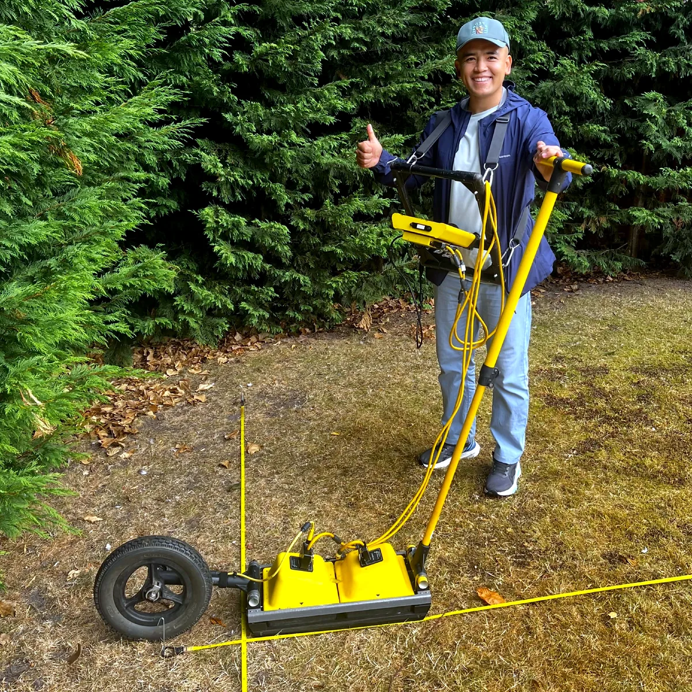
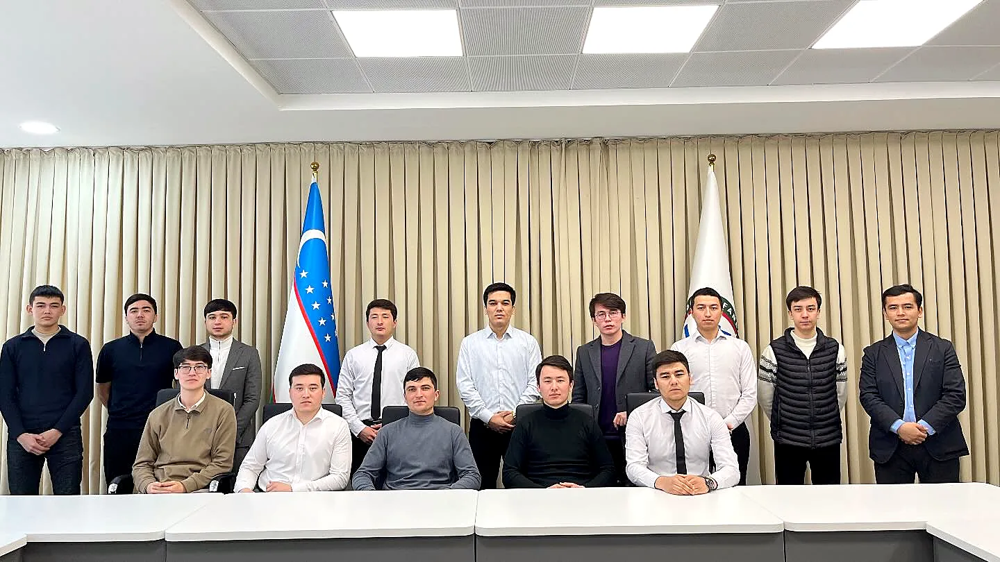
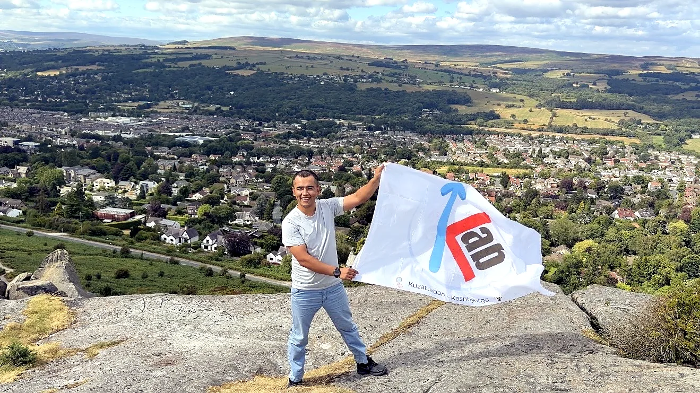
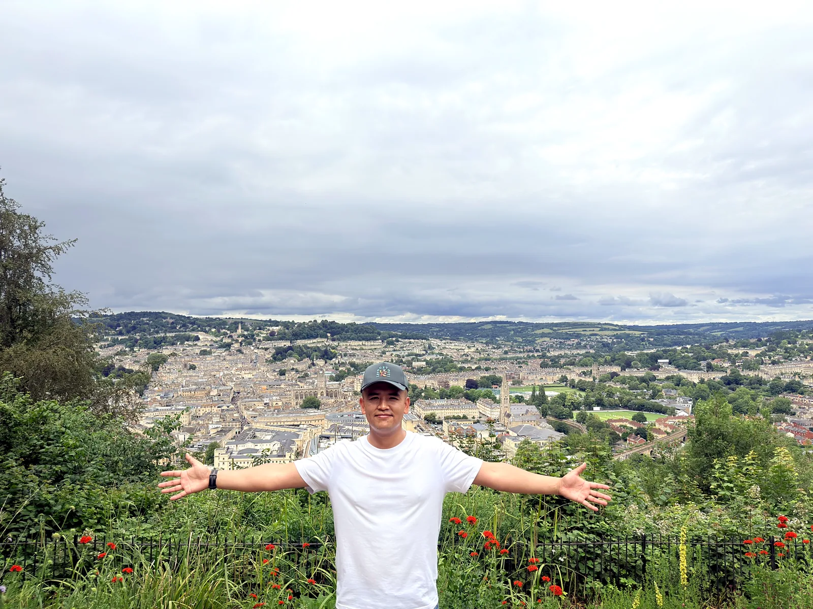

Dasturlarni kim tuzishini va ular nimaga tayanishini bilishingiz kerak.


Men Shohruh Bokijonov, geofizikman. Oʻzbekiston Milliy universitetida geofizika boʻyicha 2016-yilda bakalavrni, 2018-yilda magistraturani tugatganman. Keyin Janubiy Koreyada oʻqidim. 2019-yilda Pusan milliy universitetida ikkinchi magistraturada, 2020–2022-yillarda Pukyong milliy universitetida doktoranturada boʻldim. 2023–2026-yillarda Toshkentdagi Geologiya fanlari universitetida dars berdim. 2026-yil apreldan Leeds universitetida (University of Leeds) PhD tadqiqotchisiman va shahar ostidagi geotermal energiyani oʻrganaman.
Xorijda oʻqish yoʻlini vositachisiz oʻtdim. Koreya va Buyuk Britaniya vizasi hamda tibbiy sugʻurtaga hujjatni oʻzim topshirib, birinchi urinishda oldim. Kompas Lab da shu yoʻlni oʻzbek tilida, rasmiy manbalar bilan tushuntiraman. Tekshirmagan narsamni "tekshirilmagan" deb yozaman.

Uch yil oldin Oksford universitetidagi PhD loyihasiga topshirish uchun professor Richard Walker bilan Zoomʼda gaplashgandim. U Markaziy Osiyo zilzilalarini oʻrganadi. Keyinroq konferensiya bilan Oksfordga borganimda, uning kabinetida yuzma-yuz suhbatlashdik.
Bu hikoyani professorga xat yozishga ikkilanayotganlar uchun aytyapman. Bitta xat va bitta suhbat yillar oʻtib ham kerak boʻlib qoladi. Professorga xat yozish tartibi PhD dasturida bor.
2023-yil dekabrda geofizika yoʻnalishidagi talabalar bilan Kompas klubini boshladim. Xorijda oʻqish va ilmiy ish haqida yuzma-yuz gaplashardik. 2025-yilda shu tajribani hamma foydalana oladigan onlayn platformaga, Kompas Lab ga aylantira boshladim.





